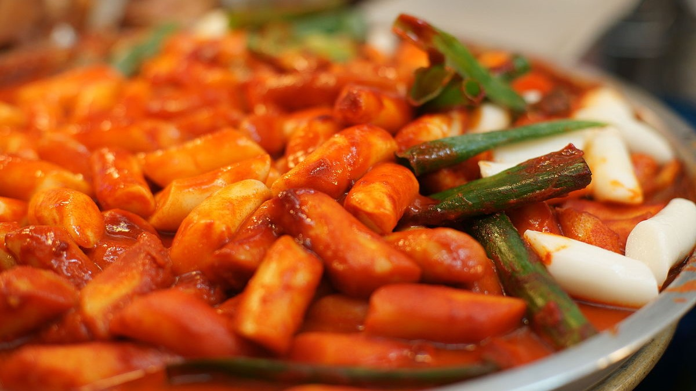

Main
- 350g / 12 ounces Korean rice cakes, separated
- 150g / 5.3 ounces Korean fish cakes
- 2 cups Korean soup stock (dried kelp and dried anchovy stock)
- 60g / 2 ounces onion, thinly sliced
| Tteokbokki (Spicy Rice Cakes) | Ingredients: | Steps: |
|---|---|---|
|

Description: Tteokbokki is one of the most popular street foods in Korea. It consists of rice cakes while fish cake is added sometimes. It is usually paired with other fried foods, and is known for its spicy, savory and sweet flavor. This recipe demonstrates how to create the delicious spicy dish, coming from mykoreankitchen.com Time needed: Preparation time - 10 minutes Cooking time - 10 minutes Total time - 20 minutes |
Main
Sauce
Garnish
|
Servings: 2 |